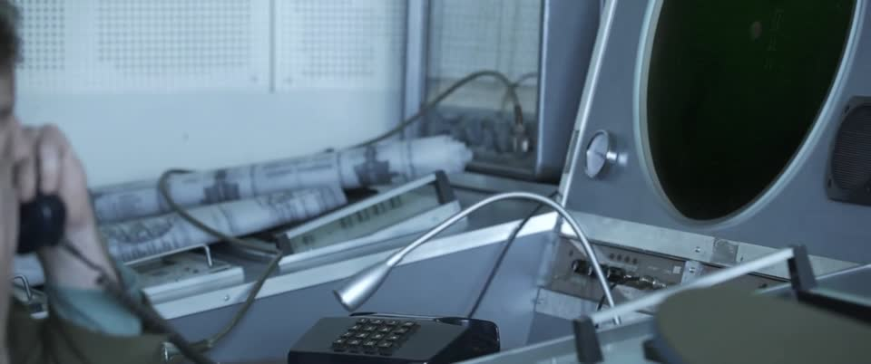
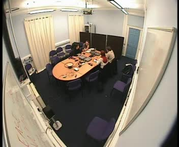
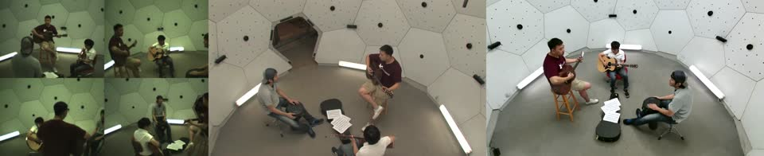
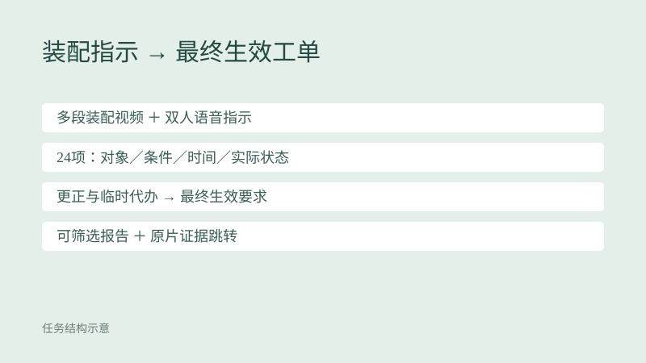
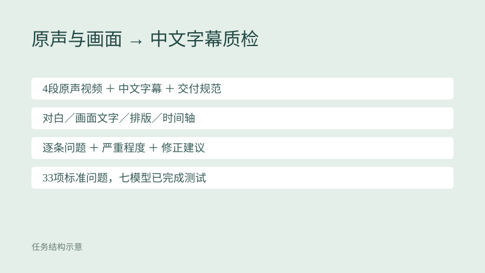
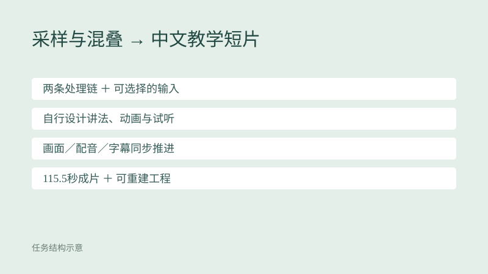

从讲解录屏复刻 Linear 整页
根据约7分钟中文讲解录屏，从空目录还原完整产品官网。需要恢复九个主要段落、长页结构、页面文案、交互与手机布局。
Sol 86.2
搁置原因与运行口径
有效联网成绩86.16，高于当时低于80分的难度目标。结构、交互及大部分参数可恢复，主要失分集中在文案覆盖，尚未形成足够难的音视频复刻题。
gpt-6.1-sol · xhigh · v2 · 27.7分钟。含视觉裁判；联网。
任务与结果记录 →保留已完成测试、暂未纳入正式集的案例，展开查看搁置原因与运行口径。
正式案例汇总 →根据约7分钟中文讲解录屏，从空目录还原完整产品官网。需要恢复九个主要段落、长页结构、页面文案、交互与手机布局。
Sol 86.2
有效联网成绩86.16，高于当时低于80分的难度目标。结构、交互及大部分参数可恢复，主要失分集中在文案覆盖，尚未形成足够难的音视频复刻题。
gpt-6.1-sol · xhigh · v2 · 27.7分钟。含视觉裁判；联网。
任务与结果记录 →
根据中文讲解录屏实现字体浏览器，恢复预览文字、字号滑块、Row／Grid、搜索、排序以及响应式布局。
Sol 83.7
有效成绩83.72，高于当时低于80分的目标。模型主要漏了部分文案、滑块下限和移动端细节；现有行为中仍有可由画面或产品先验恢复的部分。
gpt-6.1-sol · xhigh · v1 · 46.2分钟。含视觉裁判；另存确定性口径同分；历史受限网络条件。
任务与结果记录 →
给定约102分钟完整电影和17道开放式问题，定位短促非语音声音，回答同期画面、动作阶段及重复实例的对应关系。
Sol 91.6
新版Sol得分91.57，高于低于70分的难度目标。场景检索、密集抽帧和通用声音工具恢复了大部分关键细节。
gpt-6.1-sol · xhigh · micro-v3-testset-r2 · 114.5分钟。一次有效求解，三轮Terra high评分均值；联网。
任务与结果记录 →
从约18分钟四人自然项目会议中整理最终决定、责任分工、期限条件、未决问题和旧纪要更新，并给出可回查证据。
Sol 98.1
已发布自然会议版得分98.125，未达到低于70分的目标。主要事实可从原声和转写获得，同场声音参考也让身份匹配易于恢复。
gpt-6.1-sol · xhigh · natural_pilot · 当前详情页版本 · 21.2分钟。当前详情页主分；一次求解，三轮Terra high判分及既有审计；联网。
任务与结果记录 →
对齐同场表演的多路视角与参考声，交付实际成片、音轨、镜头表、同步映射和可独立执行的重建脚本。
Sol 100.0
当前同步诊断版100分。此前多机位、音色归属和主题跟随等已测版本也均高于70，尚未形成达标难例。该100分对应冻结同步与交付标准。
gpt-6.1-sol · xhigh · sync_v7 · 17.3分钟。当前详情页主版本；确定性评分与既有独立重建审计；联网。
任务与结果记录 →
结合多段装配视频、双人语音与画面指示，落实24项工单的主检对象、条件对象、实际状态及最终生效要求，交付可筛选报告。
Sol 100.0
已完成v3得分100，对象、时间、状态及生效要求全部通过本版验收。增加指代、更正与角色权限后仍未达到低综合分目标。
gpt-6.1-sol · xhigh · v3 · 已完成测试版本 · 33.2分钟。完成运行exit0；自动85分＋交付15分；后续版本单列；联网；历史设90分钟上限，33分钟内正常完成。
任务与结果记录 →

把采样与混叠问题做成115.5秒中文教学短片，自行设计动画、配音、字幕与试听，交付成片和可重建工程。
Astra 85.0
按用户要求暂缓收录。来源页严格AI复评85分，知识与视觉部分60/60，音频25/40；主要不足是中文旁白的断句、重音和清晰度。
gpt-6-astra · 来源页未公布 · 实测v6.5 · 当前题面v6.5.1。外部来源页严格AI复评，未经过教师人工复核；保留原分项与版本差异；来源页未公布运行网络条件。
任务与结果记录 →